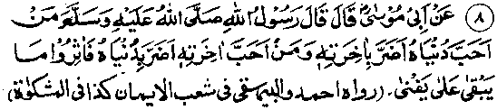
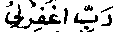
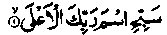
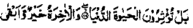
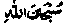

Chapter Six · Section (d): Ahadith on the foregoing subjects (concerning the excellence of Tawakkul)
Hadith 8

He who loves this world, does harm to his Akhirah; and he who loves his Akhirah does (seem to) harm his worldly interests. So, give preference to what is everlasting over that which is short-lived. (Mishkaat)
However long a man may live, his life must end inevitably and however big a person’s fortune may be, he will have to lose it one day. It will either be spent and wasted during his life or he will die and leave it behind. The life Hereafter on the other hand is everlasting and its bounties are eternal. Hence everybody, if he has a little sense, should prefer the eternal to that which is short-lived. It is the height of foolishness to hanker after something which, even if one can attain it, does not remain in one’s possession forever. Still, as our reason has been blinded by heedlessness, we have become enamoured of the beauty and adornment of this world, which, in reality, is like the waiting room of a railway station where the travellers Stop for a short while,till the train comes and they board it, bound for their destinations. The best use of this short time is to spend it in making preparations for the journey, in arranging things which will be of use during the journey or after reaching the destination. During this brief stay, if someone were to spend his precious time in roaming about or in cleaning the waiting room and arranging its furniture properly or worse still in decorating the room with mirrors and other ornamental designs, leaving his luggage scattered about, he would naturally lose all his precious things.
In this Hadith, there is a warning against love of this world. For, love is the strongest of passions and if you love someone or something, by and by the object of love takes possession of your entire being. That is why Rasulullah Sallallaho alaihe wasallam has persuaded us to cultivate a true love for the Hereafter and warned us against adoring this world. Indeed, one who loves this lowly world, may sometimes perform virtuous deeds for the Hereafter but, soon, the passion for the world asserts itself and gradually the man becomes negligent ip practices valuable for the Akhirah. Our elders have advised, "He who is enamoured of this world cannot be guided into the right path, even though all the great Divines and Sheikhs make a united effort to reform him. Similarly, he who renounces this world and shuns it, cannot be led astray, even though all the corrupt people make a united effort to tempt him away from the right path?’ (Mazaahir-e-Haqq)
Baraa Radhiallaho anho reports Rasulullah Sallallaho alaihe wasallam as saying: "He who indulges in a lustful life will be deprived of fulfilling his wishes in the Hereafter; be who looks greedily towards the ease-loving life of the well-to-do is regarded as a mean person in the kingdom of heaven; he who is contented with the minimum provision,from Allah Ta'ala, will be allotted an abode in ‘Jannat-ul-Firdaus”. (Durre Manthur).
Luqman (the wise) alaihissalam is a well-known sage, whose advice to his son has been mentioned in the Holy Qur’an. It is said that he was a dark-complexioned slave from Abyssinia. Allah Ta'ala bestowed His favours upon him and he came to be known as Luqman the wise. According to some Traditions, Allah Ta'ala gave him a choice between kingship and wisdom. He said that he prefered wisdom. Another Hadith says: "Allah Ta'ala asked Luqman whether he liked to be a king and justly rule over the people." He submitted, "O my Lord, if it is a command from You,I must obey, for, in that case, I shall be assisted by You. But if I am granted the choice to accept or to decline, I would rather be excused; I do not like to undertake this onerous responsibility" The angels questioned him about it; he said to them, "A ruler is always in a difficult situation. Tyranny and other evils surround him on all sides, and everything depends upon whether he is Divinely aided or not. If he rules justly, he can attain to salvation, if not, he is led astray from the path leading to Jannah. And, it is far better to lead a humble life rather than to lead an easy life in this world and do harm to one’s life in the Hereafter. He who prefers this world to the Hereafter suffers a double loss: this world forsakes him, sooner or later, and he has no value in the Hereafter." ‘The angels were greatly surprised at his remarks. After this, Luqman went to sleep and Allah Ta'ala bestowed wisdom upon him. (Durre Manthur)
Luqman’s sayings and the words of advice, he gave to his son, contain rare wisdom, and quite a number of Traditions refer to ‘Luqman’s advice to his son! One of these runs like this: "O my dear son, sit in the company of the Ulama frequently and listen carefully to what the wise men say, for Allah Ta'ala gives life to the dead hearts by the ‘Nur’ of wisdom, just as He revives the dead earth by heavy life-giving rains".
They relate that once a stranger passed by Luqman alaihissalam while he was sitting among his followers. The man said, addressing Luqman, "Aren’t you the bondsman of such and such tribe"? He replied, "Yes, I was a slave boy of that tribe". The stranger asked again, Aren’t you the one who used to graze the goats near such and such hill?" Luqman replied, 'Yes, I am the same person". The man said, ‘Then what has brought you to this noble position?" Luqman alaihissalam replied, "I was very particular about a few things and I observed them on all occasions, viz. fear of Allah Ta'ala, truthfulness in speech, fulfilling a trust and avoiding useless talk".
He says: "My son entertain good expectations from Allawi without losing fear of His punishment. A fear of His punishment should not make you despair of His Mercy". His son said, "The heart is one; how can it contain hope and fear at one and the same time"? Luq-man alaihissalam replied, "A Mo’min is such as if he possessed two hearts: one teeming with hope and the other equally full of fear." He advises his son to recite

(O my Lord, forgive my sins) frequently. For, there are certain Hours during which Allah’s special favours descend upon His men and everybody is granted whatever he asks from Allah Ta'ala.” He says: "My dear son, no one can perform good deeds unless he possesses a firm belief in Allah Ta'ala. If a person’s belief is unsound, he is very weak in performing good actions. My dear son, if Shaitan (the Devil) were to create doubts in your mind, let your firm belief overpower him and silence his whispers; and if he tempts you to be negligent in virtues, defeat him by remembrance of the grave and the Day of Resurrection; if he (the Devil;) tempts you towards joys of this world or makes you afraid of the hardships of this life, say to him, ‘One must inevitably leave this world’ (neither the luxuries nor the hardships of this life are enduring). He says: "My dear son, he who tells a lie loses the freshness of face, he who cultivates bad habits will ever remain sad; it is far easier to move huge mountains from one place to another than to reform the ignorant stupid.” He says: "My dear son, abstain from telling lies; follies soon arouse enmity and hatred for the liar. My dear son, be very particular about attending funeral prayers and avoid attending festivities. For, funerals remind one of the Hereafter and festivities divert one’s attention towards this world. My dear son, do not eat anything when your stomach is full; it is better to put food before a dog than to over-eat. My dear son, don’t be so sweet that people swallow you up, nor so bitter that they spit you out. My dear son, do not be less capable (in devotions) than a code which starts crowing at early dawn and you be lying asleep in bed. My dear son, don’t delay Taubah (Repentance), for death may take you unawares. My dear son, do not make friends with stupid people, lest you should develop a liking for their foolish talk. And do not incur the enmity of a wise man, lest he should turn away from you in disgust (and you should be deprived of getting benefit from his wisdom). My dear son, let no one but the pious partake of your foot and always consult Ulama in your affairs".Someone asked Luqman Alaihissalam, "Who is the worst o men?" He replied, "The one who does not mind being watched while doing an evil deed".
He says: "My dear son, associate frequently with the pious for, in this way alone, you can attain to the virtues that-they possess. Besides, when Allah’s special favours descend upon these beings you will also be able to receive your share of blessings; for when it rains, its showers fall on all sides of the house. My dear son, avoid the company of the wicked people, for no good can be expected to come out of associating with them. Moreover, if at any time, Allah’s punishment befalls them, you will also be affected by it". He says: "A father’s punishment is as beneficial for a child as is the water for the fields”. He says: "My dear son, since the day you were born, everyday, you are getting closer to the Hereafter with your back towards this world. So, your abode in the Hereafter is far nearer to you (because you are advancing towards it everyday, at all times) than your house in this world (because you are moving farther and farther away from it day by day)".
He says, "My dear son, avoid incurring debts; for a debt is a humiliation by day and a grief by night. (One is disgraced when the creditors make demands by day, and one spends the night in grief, worrying about his debts). My dear son, entertain hopes of mercy from Allah Ta'ala, but let not your hopes make you bold in committing sins; be fearful of Allah but let not your fear make you despair of His mercy. My dear son, if someone comes to you with the complaint that so and so has taken out both his eyes and you actually see both his eyes missing, do not form any judgement about the person until you have heard the other side. For, this man might have hit the other person first and taken out four eyes' earlier". (Durre Manthur)
The legist (Faqih) Abu-ul-Laith Rahmatullah alaihe relates that, when the last hour came for Luqman, he said to his son, "My dear son, I have given you a lot of advice during my life-time; now that I am leaving the world, I would like to advise you about six points:- (a) Busy yourself in the affairs of this world to the extent of the remaining period of your life (which is nothing when measured up against the eternity of the Akhirah).
(b) Worship Allah Ta'ala according to the measure of your dependence on Him (and, obviously, one needs His help in everything).
(c) Make preparations for the Hereafter according to the extent of your stay in that world (and, obviously, one shall h’ - to stay there eternally,for there is no other place to go to after death).
(d) Continue to struggle for redemption from Hell-fire till you are sure you have attained it. (It is common knowledge that, if someone is under trial for a grievous offence, he continues to make efforts for his acquittal till he is sure that the case is going to be decided in his favour).
(e) If you have the audacity to indulge in sins, do so to the extent that you can endure Hell-fire (for, punishment of sins is dictated by law and you are never sure whether the Sovereign, however infinite His mercy may be, will grant you mercy petition).
(f) When you want to commit a sin, look for a hiding place that is not being watched by Allah Ta'ala and His angels (for, everybody knows the consequences of engaging in a revolt before the eyes of the Sovereign Himself or in the presence of His secret agents). (Tanbeeh-ul-Ghafileen)
These words of advice by Luqman have been mentioned here, as they bear upon the subject contained in the foregoing Hadith viz. ‘He who loves this world does harm to his life in the Akhirah’.
‘Arfajah Thaqafi Rahmatullah alaihe says that he asked Abdullah Bin Mas'ood, Radhiallaho anho to recite the Surah beginning:

Glorify the Name of thy Lord, the Most High.
Ibne Mas'ood Radhiallaho anho began to recite the Surah and when he recited the verse:

But you prefer the life of the world, although the Hereafter is better and more lasting, (al-A'ala: 16-17)
He stopped short and said "No doubt, we prefer the life of the world to the Hereafter". The audience sat silent. He again said, "We prefer the life of the world, because we see its beauty and adornments, its women, its food and drinks, while all the bounties of the Akhirah are veiled from us. So, we give preference to this world and lose sight of the. Hereafter".
Anas Radhiallaho anho relates that Rasulullah Sallallaho alaihe wasallam said, "The Kalimah ‘Laa Illaha Illallaho’" (There is none to be worshipped but Allah) protects men from the displeasure of Allah, so long as they do not prefer their worldly business to the requirements of the Akhirah; and if they value worldly business more than the Hereafter, and recite the Kalimah ‘Laa Haha 111-allaho, it is not accepted from them and it is said, ‘You are liars (i.e. you are not sincere in your profession of faith; these are just empty words).'
Another Hadith reports Rasulullah Sallallaho alaihe wasallam as saying, ‘Whoever meets Allah Ta'ala testifying:
There is no God but Allah, Who is Alone and Who has no partners;
He will enter Jannah unless he mixes it up with other things". After he had repeated his words thrice, one of the companions said, "O Rasulullah, I would (love to) offer my parents for sacrifice in lieu of you, what is meant by ‘mixing it up with other things". He replied, 6Love for this world, preferring it to the Hereafter, hoarding money for this life, taking pleasure in worldly possessions and behaving like the proud people”.
Another Hadith reports Rasulullah Sallallaho alaihe wasallam as saying, "This world is a coveted abode for him who has no abode (in the Hereafter) and a much-desired property for him who has no property (in the Hereafter); and he who has no sense gathers provisions for the world". (Durre Manthur). Rasulullah Sallallaho alaihe wasallam said, “Accursed is this world and all that it contains is accursed, except that which is for the pleasure of Allah Ta‘ala.“ (Jami-us-Saghir)
Imaam Ghazali Rahmatullah alaihe writes, in deprecation of the world: "All praise be to Allah Ta'ala Who has made His friends aware of the dangers of the world and its baneful influences. He has revealed to them its secrets and warned them of its defects. The divines have realized the true nature of the world’s various phases and have, after comparing its merits and demerits, realized that its harms are much more than its benefits. They understand that the hopes one entertains of this world are nothing in comparison with the dreadful consequences of worldly pursuits. The world is like a pert woman, of worthless character, who seduces people through its beauty and adornments, and leads to the damnation of all those who desire to enjoy its company. It runs away from those who adore or admire it and is most niggardly in returning their advances. Even when it gives attention to its admirers, its attention leaves them no peace in the midst of their trials. If the world perchance does one good turn to somebody, it goes on doing evil to him for a whole year. He who is fascinated by it, ultimately suffers humiliation; he who takes pride in his worldly achievements, has to reproach himself for his sorrowful end. It runs away from its admirers as it runs after those who shun its advances. It disregards those who serve it and advances towards those who turn away from it. Even its purity has a taint of impurity. Its joy is mingled with sorrow; its luxuries have an aftertaste of remorse and sorrow.
The world is like a deceitful treacherous woman; it adorns itself for its admirers but, when they have become enamoured of it, betrays them and upsets their plans lt bewitches them with its enchantments and, afterwards, gives them a taste of its fatal poison. The world is an enemy to Allah Ta'ala and it is an enemy to His friends and foes alike. It is an enemy to Allah Ta'ala in as much as it waylays those who undertake a journey to Him: it is an enemy to the friends of Allah because it adorns itself to fascinate them, and then forsakes them to taste bitter sorrow. It is also hostile to the enemies of Allah, for it deceives them with its treacherous pranks and, When they begin to trust its friendship, it forsakes them when they are in dire need of help, thus causing them to suffer endless sorrow’’
There are many Ayaat of the Holy Qur’an and quite a number of Ahadith on deprecation of worldly attachments. All Ambiya (Prophets) Alaihimussalam were sent to mankind for warning them of such attachments. Once Rasulullah Sallallaho alaihe wasallam came upon the dead body of a kid. Addressing the Sahabah he said, "Do you think this dead body is of any value to its master?". The Sahabah replied, "Obviously, it is of no value to him. That is why he has thrown it away." Then Rasulullah Sallallaho alaihe wasallam said; "The world is more contemptible in the sight of Allah Ta’ala and of far less value than this dead kid is to its master. If the world was equal, in value, to a gnat’s wing in the estimation of Allah Ta'ala, He would not give a non-believer draught of water out of its resources". Rasulullah Sallallaho alaihe wasallam once said,’'Love of the world is the basis and the source of every sin".
Zaid bin Thaabit Radhiallaho anho says, "Once we were sitting in company with Abu Bakr Radhiallaho anho when he asked for water and was presented some water mixed with honey. He held it to his mouth and was about to drink it when he broke into tears and began ic weep. He wept so bitterly that those who were sitting beside him were also moved to tears and everybody wept most bitterly. He again held the cup to his lips, but put it back again and began to weep and cry. At long last, he wiped his tears and said, I was once sitting in company with Rasulullah Sallallaho alaihe wasallam when I saw that he was pushing something away from himself with both his hands, though I could not see anything. I asked, ‘O Rasulullah, what is it that you are driving away from yourself?’ He replied, ‘The world presented itself to me, but I drove it away. It came to me once again and said, ‘You have guarded yourself against me,but there will follow people who will not be able to protect themselves against me.’
It occurs in another Hadith that once Rasulullah Sallallaho alaihe wasallam said, "Most astonishing is the case of a person who believes that the life Hereafter is permanent and everlasting and yet struggles to achieve (the gains of) this world, which is an abode of deception'.'Once Rasulullah Sallallaho alaihe wasallam came upon a dunghill where there lay some decayed bones, droppings of animals and rags of worn-out cloth. He stopped there and said, "Look, this is what the world, its beauty and adornments come to in the end".
There is another, rather detailed, version of this Hadith, though Allama Iraaqi Rahmatullah alaihe and other scholars say that they have not been able to trace its source. However, Imaam Ghazali Rahmatullah alaihe has made a reference to it and the author of ‘Qoot’ has related it, in a ‘Mursal’ form, on the authority of Hasan Basri Rahmatullah alaihe. (A ‘Mursal’ Hadith is one in which a man in the generation following the Sahabah directly quotes Rasulullah Sallallaho alaihe wasallam). It reads: Abu Hurairah Radhiallaho anho narrates that once Rasulullah Sallallaho alaihe wasallam said to him, "Shall I show you the true nature of this world?" He submitted, "Certainly, O Rasulullah, Whereupon he took him to a dunghill outside Madinah Munawwarah, where there were lying some human skulls and excrements, rags of worn-out cloth and bones, etc., and said, "Abu Hurairah, these are skulls of men. Their brains were full of greed as you are today for (the things of) this world. They used to build up high hopes about the distant future, as you do todays. But now the empty skulls are lying on the ground and, in a few days, they will turn to dust These excrements are, in reality, those delicacies of food which were bought with hard-earned money, cooked with diligence and eaten (with relish). Now they are lying here, in a state repulsive to men. These rags are, in fact, pieces of fancied dress which people used to wear and feel proud. Now they have become rags scattered about by the winds. These are the bones of beasts, on which people used to ride and roam about proudly in the world. Let him who cares weep and cry over these circumstances". Abu Hurairah Radhiallaho anho says, "At this all of us wept most bitterly".
In another Hadith, Rasulullah Sallallaho alaihe wasallam is reported to have said, "This world looks fresh and sweet and Allah Ta'ala has made you heirs and successors of your forefathers in this world, in order that He might watch your conduct in it. When worldly goods were lavishly given to the children of Israel, they were fascinated by the beauty and adornments of this world and they fell into temptations concerning women and ornaments."
Isaa alaihissalam says, ‘Do not make the world your master or, else, it will enslave you; deposit your possessions with AHah Ta'ala where no harm can come to them. The wealth lying in the treasuries of the world may go waste at any time, but no mishap can occur to the Treasury of Allah Ta'ala. He also says, ‘One sign of the depravity of the world is that acts of disobedience to Allah Ta'ala are committed in it and another such sign is that no one can attain to the Hereafter without forsaking worldly gains. Take heed and mind it well that love of the world is the source of every sin and that a little while spent in following one’s vain desires may lead to a long period of suffering. He also says; “There are people whom the world seeks and others who seek the world, it goes after those who seek the Hereafter and unwillingly lets them have their means of sustenance. As for those who seek this world, the Hereafter does pot care for them tin death lays its hand on them (they die without having achieved any gains of the Akhirah).’
It is said that once Sulaiman Alaihissalam was flying on his throne with his armies, while birds spread their wings above him to protect him from the sun, and the courtiers from among the jinns and men sat with him on either side. He came upon a saint, who said, "Subhanallah, Allah Ta‘ala has bestowed upon you such a vast kingdom". Sulaiman alaihissalam thereupon said, "The credit entered in a believer’s book of deeds for reciting () ‘Subhanallah’ once is far greater in value than the entire kingdom of Sulaiman, for, this kingdom shall come to an end soon enough and the blessings of ‘Subahanallah’ (

) will endure permanently."Rasulullah Sallallaho alaihe wasallam says, "He who seeks this world, making it his ultimate aim (in life), Allah Ta'ala, has no regard for him and afflicts him with four things: (1) an anxiety that has no ending (i.e.. he always remains anxious to increase his income); (2) an occupation, leaving him no spare time; (3) a neediness which deprives him of any feeling of contentment (when his income increases, the expenses also increase and the income always seems to be insufficient); (4) unending hopes about the distant future, which can never be fulfilled.”
It occurs thus in the ‘Sahaaif (revealed booklets) of Ibrahim alaihissalam, "O world, how contemptible you are, in the sight of the pious men for whom you adorn yourself. I (Allah Ta'ala) have inspired their hearts with enmity for you and made them turn away from you (in disgust). I have not created anything more contemptible than you. Your grandeur amounts to nothing,because it vanishes very soon. I decreed on the very day I created you that you would not remain with anyone forever, nor would anyone keep you with himself forever, howsoever unwilling he might be to part with you. Blessed are the pious persons who apprise Me of their wholehearted acceptance of what I have decreed for them, and tell Me about the truth of their true and strong faith. This is the eternal prosperity! When they rise from their graves and come to Me. I shall grant them a radiance (Nur) which will shine forth before them and the angels will be there on their right and on their left; and, to crown all, I shall fulfil all their hopes and grant them everything that they expected of Me."
Rasulullah Sallallaho alaihe wasallam says, “On the Day of Resurrection, some people will have good deeds weighing as much as all the mountains of Arabia; but they will be thrown into Jahannam!' When someone asked, "Will they be observers of Salaat?" He replied, Yes they will have observed Salaat, kept fasts and been regular in Tahajjud (Nafl’ or supererogatory midnight Salaat). But, in spite of all this, they were such as would rush for any worldly gain, wealth or honour, etc (without caring whether it is lawful or unlawful)' Says Isaa Alaihissalam, ‘Love of this world and love for the Akhirah cannot be cherished by one in the same heart, just as no vessel can hold both fire and water at the same time’
Rasulullah Sallallaho alaihe wasallam says, "Keep away from this world; It is a sorceress more deceitful than ‘Haaroot’ and ‘Maaroot’.’ Another Hadith says, ‘Once Rasulullah Sallallaho alaihe wasallam came upon a company of Sahabah and said to them, ‘If any one of you wishes that Allah Ta'ala should remove his blindness of the heart and open his eyes to the instructive aspect of things, let him remember that whosoever loves this world and entertains excessive hopes about the distant future, Allah Ta'ala makes his heart blind in proportion to the extent of his longings. And whosoever shuns this world and restricts his hopes, Allah Ta'ala shall grant him knowledge without his having learnt it from anyone else and lead him to the right path, without being guided by anyone else. Soon there will arise people who shall rule through slaughter and oppression, who will amass sufficient means by niggardliness and vanity and who will win the hearts of the people through submission to their wanton desires. If anyone of you witnesses such times and remains contented with his insufficient means, though he could become rich; and endures hatred of the people, though he could command their love by following their desires; and remains contented with humble position though he could win popularity through fulfilling their desires, in short, if he endures all these things only for the sake of Allah Ta'ala, he will get a reward equal to that of fifty ‘Siddiqeen’ (Siddiqeen is the plural of ‘Siddiq’,the one who gives his sincerest support to the Nabi).
Another Hadith has it to the following effect, ‘Once a lot of wealth was received by Rasulullah Sallallaho alaihe wasallam from Bahrain. When the needy among the Ansaar of Madinah Munawwarah heard about it, a large number of them came to offer Fajr Salaat with Rasulullah. When the Salaat was over, Rasulullah Sallallaho alaihe wasallam looked at the gathering and smiled; he then said, "I think you have come because you have heard of the wealth I have received from Bahrain’ They submitted, ‘O Rasulullah, It is true; we have come for the same thing’. Rasulullah Sallallaho alaihe wasallam then said, ‘I give you glad tidings that soon there will be abundance of wealth: you can hope to get what would please you. I have no fears of your going astray through poverty or hunger, but rather I am afraid that worldly wealth may come to you in abundance, as happened with previous generations, and as a consequence you may set your hearts upon the world, as they did, and that it would ruin you as it ruined them’.
Another Hadith says that Rasulullah Sallallaho alaihe wasallam once said; "What I fear most on your account is that Allah Ta'ala should bring forth for you the blessings of the earth". Someone asked, “What are the blessings of the earth". He replied,"The attractive fruitfulness of the earth."
Abu Dardaa Radhiallaho anho reports that Rasulullah Sallallaho alaihe wasallam once said; "If you knew what I know, you would laugh less and weep more often and the world would become contemptible in your sight, and you would not prefer it to the Hereafter”. After relating the Hadith, Abu Dardaa Radhiallaho anho added on his own account: "If you knew what I know, you would go out to the jungle, weeping and crying and leave your property unguarded. But your hearts are heedless of the requirements of the Hereafter and you have, before you, worldly hopes and aspirations That is why the world has become your master and all your activities are directed towards it; you have reduced yourself to a condition of stark ignorance. What is worse, some of you have become like the animals, indulging in lustful activities, not minding the evil consequences. What has happened to you that you do not love one another, nor admonish one another, though you are brothers in Islam? There is discord among you because of your wrong desires, arising out of the corruption within you. If you are united in the cause of ‘Deen’ and affairs of ‘Deen’, your bonds of mutual relationship will be strengthened. What has happened to you, that you counsel one another about affairs of this world, but do not do so about affairs of the Akhirah? You are incapable of admonishing those whom you love and do not give them good counsel about the affairs of the Hereafter. This is only because of your weak faith. If you had faith in the good nd evil things of the Hereafter, like your belief in the good and evil things of this world, you would certainly give preference to the Akhirah. The Akhirah should have greater control over your affairs. You may say that the needs of this world are immediate, while those of the Hereafter are remote. Just imagine how many activities there are, in this world, of which the fruits have to be reaped later. Still you toil and fret and struggle hard for them! For example, you work hard in the fields, for months together, hoping to reap crops in the end. Similarly, you take pains to plant trees in the garden, hoping to pick the fruit after years of hard labour and patient waiting. You have deteriorated, in matters of faith, so much that you do not care to gauge the level of your Imaan (faith) by doing things that would reveal it".
"If you have any doubts about the revealed knowledge conveyed to us by Rasulullah Sallallaho alaihe wasallam, please come to us,so that we may show you the truth of this knowledge and make it abundantly clear to you. Come, we will show you the light by which you will be able to see, for yourself, that whatever Rasulullah Sallallaho alaihe wasallam said is absolutely true. You are no fools that we should regard you incapable of understanding it. For, you hold sound views about worldly affairs and act upon them most carefully. Then, what is wrong with you that you do not exercise wisdom, nor act with due care in affairs of the Akhirah. What has happened to you? Why is it that you feel very happy over a paltry gain of this world and feel very sad over a little loss, to the extent that its effect is reflected in your faces. You complain of your ‘sufferings’, calling a little trouble a ‘suffering’ and hold meetings to console one another. But you are not grieved, nor feel sad; when you happen to miss an important religious requirement; your faces do not wear an expression of sorrow. When I see your indifference towards ‘Deen’, I feel inclined to think that Allah Ta'ala has forsaken you. You greet one another happily but everyone avoids saying anything which may be unpleasant, though true, to the other. He fears lest the other person should say to him something in return, which would displease him. So, you live amicably, keeping all dark thoughts to yourselves. Thus you have become corrupt from within though, outwardly, you seem to be enjoying life. And you seem to have all agreed not to think of death. I wish Allah Ta'ala would grant me death and relieve me of sorrow on your account! And, I wish to join the company of those I love most dearly (meaning Rasulullah Sallallaho alaihe wasallam and the Sahabah Radhiallaho anhum). If they were alive, they would not have liked to associate with you, even for a short while. If there still remains an iota of good in you, take heed. For, I have told you what I think of you clearly and without hesitation, and I have spoken the truth, it is quite easy to achieve that which Allah Ta'ala has got in store for you (the boons of the Hereafter). And I seek help from Allah Ta'ala, both for you and myself. (Here ends the Exhortation given by Abu Dardaa Radhiallaho anho.)
This admonition by Abu Dardaa Radhiallaho anho deserves deep consideration, because he was showing his displeasure to those persons with whom we, today, cannot stand comparison. If Abu Dardaa Radhiallaho anho were to see our present-day deplorable indifference towards ‘Deen,’ he would certainly have died of sorrow and grief. Surely for people like him, the sight of our present-day sad plight in religious matter would be most unbearable.
Hasan Basri Rahmatullah alaihe says, "May Allah have mercy upon those who were given this world as a trust and they, in turn, entrusted it to others and passed away, freed from the worries of the world!” He also says, “If anyone prevents you from observance of ‘Deen’, defy him; but if anyone hinders you from gaining a worldly advantage, leave it for him and have no care". Abu Haazim Rahmatullah alaihe says, "Protect yourself from worldly attractions! On the Day of Resurrection, a man will be summoned and the announcement shall be made: ‘He is the man who set great value upon things which had been condemned by Allah Ta'ala". Abdullah - Ibne Mas'ood Radhiallaho anho says, "Everybody is, so to say, a guest in his own house; and all his possessions are like borrowed things. The guest shall go back home (to the Hereafter) and the borrowed things shall have to be returned".
Once Rabi‘ah Basriyyah Rahmatullah alaiha was sitting in company with some people who were talking of the world reproachfully She said, “Do not talk of the world. Do not talk of it even disparagingly. For, your talking of it shows that you consider it to be worth talking about, and something of consequence. If it were of no consequence in your sight, you would never have liked to make' a mention of it. (For, who would talk about the filth that men excrete?)”
Luqman Alaihissalam said, in the course of his last advice to his son, "Barter this world for your Deen’, you will reap the benefits (of the bargain) both in this world, and the Hereafter; but do not barter away your ‘Deen’ for the sake of this world, or else you will suffer loss in this world and the next". Mutarrif bin Shikheer Rahmatullah alaihe says, "Do not look admiringly at the luxurious life of the kings and their fine dress. Consider what shall be the end of all this."
Abu Umamah Radhiallaho anho says, "When Rasulullah Sallallaho alaihe wasallam was sent as a ‘Nabi’ to mankind, Shaitan (Satan) sent forth his detachments to take stock of the situation. They came back and told him that a ‘Nabi’ had been sent to mankind and that he had a large number of followers. Shaitan then asked them to make sure whether they (the followers) loved the world. His disciples replied, ‘Yes, certainly’. Shaitan then said, ‘I do not mind, even though they shun idol-worship, for I shall seduce them with three things: (1) earning money by unlawful means, (2) spending it in an unlawful manner, and (3) refusing to spend it on things on which it should be spent."
Ali Radhiallaho anho says; "Man shall have to render an account of his lawfully earned money and he will have to suffer punishment for the money earned unlawfully." Maalik bin Dinar Rahmatullah alaihe says, "Beware of this sorceress (the world), because its magic works even upon the hearts of the Ulama".
Abu Sulaiman Darani Rahmatullah alaihe says, "He whose heart is occupied with love of the Hereafter cannot be at peace with the life of the world; for the latter will go on struggling to take possession of his heart. On the other hand, he whose heart is occupied by the love of this world, need not worry about any hindrance from the Hereafter. For, the life of Akhirah is like a being of noble disposition, least willing to take possession of homes occupied by others. And this world is mean by nature, imbued with the desire to occupy others’ houses by force”. Maalik bin Dinar Rahmatullah alaihe says, "The more you worry about this world, the less concerned will you be about your Hereafter. And the more concerned you are about the Hereafter, the less worried will you be about this world."
Hasan Basri Rahmatullah alaihe says, "I have known people to whom the worldly benefits were of less importance than the earth on which you walk and they did not care a whit for the gain or loss of those benefits-Nor did they care to notice who was receiving them and who was being deprived”. Someone asked him, ‘What do you think of a person whom Allah Ta'ala has granted abundance of wealth and he spends it, giving it away as Sadaqah or spends it on his relations? Is it advisable for him to partake of delicious food and lead a sumptuous life? Hasan Rahmatullah alaihe replied, ‘No, even if he were to possess all the treasures of the world, it would be advisable for him to spend on his own needs only as much as was absolutely necessary. He should remit all that exceeds his barest needs to the next world, where it will be treasured up for him to be utilized on a Day (the Day of Resurrection) when he is in dire need of help."
Fudhail Rahmatullah alaihe says, "If I were presented all the riches of the world, with the assurance that no reckoning will be made for it, I would not accept it; for me, it is disgusting like carrion, which you avoid for fear for polluting your clothes". Hasan Rahmatullah alaihe says, "Bani Israel, though they worshipped Allah Ta'ala, became degenerate and began to worship idols because of their love of the world". He also says, "Man always considers his wealth to be little, but he never regards his virtues to be few. He does not care if any calamity befalls his religion but feels upset if any harm comes to his worldly life."
Fudhail Rahmatullah alaihe says; "It is quite easy to join worldly pursuits, but very difficult to extricate oneself from them." A Divine says, ‘I am astonished at him who believes that death is inevitable and that it may come to him at any time but, still, he takes pleasure in worldly pursuits. I am astonished at him who believes that Jahannam is a reality and that nobody knows what his last abode in the Hereafter is going to be but, still, finds occasions to laugh I am astonished at him who views the shifts of fortune occurring in this world at all times but, still, feels satisfied on receiving a worldly gain. I am astonished at him who believes in the Divine Decree (the belief that everything is preordained and that everyone must get his alloted share), but still takes pains for worldly gains’
They say that an old Sheikh,whose age was about two hundred years, came from Najran city to see Ameer Mu‘aawiyyah Radhiallaho anho. he Ameer said to him, “You have seen a good deal of ’ tips world in your long life. What is your opinion about it?’ The Sheikh replied, "A few years of ease and a few years of pain. There are births, and deaths every day and night. If there were no births, the world would come to an end. Likewise, if there were births only, there would be no room left for the people to live in the world. (Hence, both births and deaths should continue to occur, to keep the world population within moderate limits)."
Ameer Mu'aawiyyah Radhiallaho anho said, “Do you want any thing from me.? Tell me if I can do you any service.’’ The Sheikh said, ‘Recall my past life for me or postpone my death indefinitely”. The Ameer said, “I cannot do that." The Sheikh said, "Then I have nothing to ask from you".
Abu Sulaiman Rahmatullah alaihe says:
"No one can restrain himself from pleasures of this world, except he whose heart is preoccupied with things of the Akhirah."
Maalik bin Dinaar Rahmatullah alaihe says: "We have, as it were, agreed among ourselves to love this world; that is why no one gives good counsel to another, nor forbids him from evil things. But Allah Ta‘ala will not leave us to our fate for ever. The punishment of Allah may descend upon us unawares in any form, at any time!" Hasan Rahmatullah alaihe says: "When Allah Ta‘ala wishes well for anyone, He grants him a small amount of worldly wealth, then holds it back from him and, when he has exhausted his provisions, Allah Ta'ala grants him a little bit more. But he,who is considered contemptible by Allah Ta'ala, is granted abundance of worldly goods." One divine used to make Du‘aa (supplication), thus, ‘O Allah! O Sacred Being,Who possesseth the power to hold back the heavens from falling on the earth, prevent this worldly wealth from coming to me".
Muhammad Ibne Munkadir Rahmatullah alaihe says: "Suppose a man fasts persistently, spends the whole night in Tahajjud salaat without taking rest, gives away generous amounts of money as Sadaqah, engages in Jihaad and avoids sins; nevertheless, he will be summoned on the Day of Resurrection and made to appear before Allah Ta'ala. He will then be required to explain why he set great value upon a thing (the world) which had been declared as worthless by Allah Ta'ala, and why he regarded as insignificant a thing (the Akhirah) which had been declared by Allah Ta'ala to be of great value. Imagine how miserable and helpless he will feel! Then, what about ourselves who suffer from the same disease (love of the world) and also commit sins?
Abdullah Ibne Mubaarak Rahmatullah alaihe says; "Love of the world and indulgence in sins have made our hearts wild and insensible to anything good". Wahab Ibne Munabbeh Rahmatullah alaihe says: "He who takes pleasure in anything of this world strays from the path of wisdom; while he who tramples his lusts underfoot, never allowing them to raise their head, Shaitan is scared of even his shadow."
Imaam Shafi’ee Rahmatullah alaihe, advising one of his brothers in Islam, said: ‘This world is full of mud and slush where many persons slip. The world is an abode of humiliation. Its bustling life will give place, in the end, to desolation, its dwellers will have to travel alone to their graves, its gathering disperses, its affluence turns to poverty; its riches involve taking pains and lack of them means an easeful life. So, turn to Allah Ta'ala with single-minded concentration. Be content with whatever sustenance Allah Ta'ala has apportioned for you and do not borrow for this world out of your stock of virtues meant for the Akhirah (i.e. do not indulge in things which may have to be paid for in the Akhirah out of virtues which may run short on that Day of dire necessity (the Day of Judgment.) The life of the world is like a shadow which vanishes in no time or like a leaning wall which is going to collapse very soon. Perform plenty of good deeds and entertain few worldly hopes about the distant future.
Ibrahim Ibne Adham Rahmatullah alaihe asked someone, "Which would you prefer: seeing somebody, in a dream giving you a Dirham (silver coin) or receiving a Dinaar (gold coin) while awake ?." The man replied that, obviously, receiving a Dinaar was preferable. At this, Ibrahim Rahmatullah alaihe said, You lie. For, if you love anything of this world, it is like taking pleasure in a thing you see in a dream. And, when you turn away from a boon of the Akhirah, it amounts to declining it while awake."
Yahya Ibne Mu'aaz Rahmatullah alaihe says: "Three persons are wise: (1) he who forsakes the world before being forsaken by it; (2) he who makes preparation for the grave before the time comes for him to enter it; (3) he who wins the pleasure of Allah Ta'ala before he (dies and) goes to meet Him" He also says:" This world is accursed to such an extent that merely longing for it makes you neglectful in devotion to Allah Ta'ala; what will happen when you become engrossed in worldly affairs." Bakr Ibne Abdullah Rahmatullah alaihe says: "He who, after achieving worldly benefits, feels secure against their evil effect, is like one who covers fire with dry grass, in order to extinguish it.” Bundaar Rahmatullah alaihe says: "When you hear worlds people talking about renunciation of worldly pleasures, be sure that Iblees (Shaitan) befools them."
A Divine says;“O people, perform good deeds during these days of respite (lifetime) and fear Allah! Do not be deceived by high hopes for the distant future and forgetfulness of death. Take no thought of this world, for it is a deceitful wretch. It beautifies and adorns itself and beguiles you by fanciful hopes about the future but, in the end, lands you in temptations. It adorns itself for its admirers so that, after make-up, it looks like a newly-married bride on her wedding day. So, people fix their gaze upon her face, the hearts are fascinated by its charms and many men become enamoured of its (fake) beauty. But this wretch has killed many of its admirers and forsaken, most helplessly, many of its lovers who counted upon its loyalty. Just consider and try to comprehend the reality of this world. It is a place abounding in things that are fatal to the soul and it is so contemptible that its Creator has Himself condemned it. (Suppose a physician prepares a medicine and says that it contains poison and that you may take a very small dose of it only when it becomes absolutely necessary. Now, if a foolish person were to take a much larger quantity in a single dose, it would be fatal for him. And, for someone not to heed the physician’s warning, would be the height of foolishness. All things of the world which are new today, will wear out and become old. Sovereignty in this world is short lived; those who are in power will end in humiliation; affluence will ultimately change into poverty; friendships will not last for long. In short, all that looks good in the world is doomed to perish. May Allah bless you all! Wake up from lethargy and inaction.
"Rise from the slumber of negligence before it is too late,before it is rumoured about, ‘So-and-so has fallen ill and there is little hope of recovery. Direct us to some good physician. Call in some efficient doctor’. Then the doctors will be sent for, the physicians will be called in, time and again, but everyone will say that there is no hope of life. Then it will be whispered about; the man is making his will; his voice has become hoarse, rather it has choked he does not recognise,anyone he is heaving deep breaths he is moaning with pain, his eyelashes droop. This is the time when the circumstances of the Next World will be revealed unto you, but your voice will fail you and you will stutter, unable to express yourself or speak a word. Your kinsmen, your son, your brother, your wife will be standing near your bed, all weeping with bitter sorrow. You will look at their faces but will not speak a word. And then the soul will begin to depart from the parts of your body, one after the other, till at last it leaves the body altogether and flies to the heavens above. The kinsmen will hurriedly arrange for the burial and the mourners will be consoled, their grief lightened with weeping. The enemies will rejoice over your death, the heirs will divide up your property and you will be left to reap the consequences of your deeds. (This is the real significance of this life)".
Hasan Basri Rahmatullah alaihe wrote in a letter to Amir-ul-Mo’mineen Umar Ibne Abdul Aziz Rahmatullah alaihe, after praising Allah Ta'ala and invoking His choicest blessings (Salaat on Rasulullah Sallallaho alaihe wasallam):" The world is a transitory place, where men stay for a brief while,and go on a journey again, bound for the Unknown. It is not a permanent abode. Adam Alaihis-salam was sent down to this world as a punishment (1) for a lapse that he happened to commit in Jannah, i.e. it is a prison-house where man has been sent as a punishment. So, you should be on your guard; One’s most valuable asset for the journey is nonattachment to the world and its pleasures; and the really rich are those who, though poor, possess a sublime unconcern for worldly attractions. (Those who seem to be poor but have contented minds are really rich). This world is all the time busy leading men to their ruin: it humiliates those who hold it dear, it leads into dependence (on others) all those who wish to amass its wealth. It is like a poison which men take unknowingly and die.
"So, live in the world as though you were a wounded patient who is careful and cautious about everything so that he may regain his health; and takes bitter medicines, lest his disease should drag on longer. You should beware of this treacherous, deceitful, tricksy that adorns itself for seducing people and lands them in misery. It visits people with fanciful hopes and beguiles those who try to win its favours. It beautifies itself for its admirers and, after make-up, looks like a bride, on whom people fix their eyes and become enamoured of its false beauty, but this wretch is hostile to everybody. Still, one wonders why the survivors do not learn a lesson. Nor do the scholars,who know the word of Allah, learn a lesson from His sayings (on deprecation of this world). The admirers of the world are deceived Mien they see their chance of worldly desires getting fulfilled.
"They become engrossed in the world and ignore the Akhirah. And what follows is sheer remorse and utter sorrow, for death overpowers them with its agonies and harrowing pains, and, in addition,there is grief over parting with the world and it prized possessions. The fact is that he who craves for the world can never see the fulfilment of his desires; nor does he find peace and respite from labour till he departs from the world, without having prepared for him eternal life. O Ameer-ul-Mo’mineen! ‘Be on your guard against worldly attractions especially during the hours of joy and prosperity, for, the world drags those who trust it, into some misfortune as soon as it finds them experiencing brief moments of joy. He who is happy in the world is suffering from an illusion and he who is after making (excessive) profit will come to harm.
"The ease and comfort of this world is mixed with hardships and life in it is destined to perish. Its joys are mingled with sorrow; whatever is past cannot be recalled, and all that lying ahead, is uncertain. The hopes of this world are false. Whatever seems to be pure in this world is, in reality, polluted; its luxuries are gained with hard labour and man, in this world, is in danger at all times. If he had sense, he would find the pleasures to be perilous and constantly haunted by misfortunes. Even if Allah Ta'ala, Who is the Creator of this world, had not warned mankind against its evils, the treacherous nature of the world itself would have served as a sufficient warning. Nevertheless, Allah Ta'ala Himself has advised that it is of no value in His estimation and that, although He has created it, He has never looked at it with appreciation.
"The world presented itself, with all its treasures, before Rasulullah Sallallaho alaihe wasallam, who did not accept it, nor showed any interest in it For, he did not want to approve a thing rejected by Allah. That is why Allah Ta'ala has purposely turned the hearts of His pious men away from it and granted it in abundance, to His enemies (the non-believers). But some people who have set their heart on the world, see the Kaafirs in affluence and wrongly think that they have been favoured by Allah Ta'ala. They do not realise how little, in the world, was granted by Allah Ta'ala to Rasulullah Sallallaho alaihe wasallam who had to tie up stones over his belly in order to numb the pangs of hunger."
A Hadith says that once Allah Ta'ala said to Musaa Alaihis-salam: "When you find worldly riches coming to you, be sure it is a punishment for your sins; and if you see poverty and hunger coming, welcome it and say, this is the distinguishing mark of the pious." And, let him who wants to follow the example of Eisaa Alaihissalam mark his words: "Hunger is my curry (when one is hungry, even plain bread tastes as delicious as the bread taken with curry); my distinguishing mark is fear of Allah; my dress is of coarse wool; I bask in the sun for warmth and the light of the moon is my lamp; my feet are my riding-beast; my food and my fruit is the grass that grows on the earth; I rise in the morning with nothing with me and when the evening comes I have nothing in my possession. But there is no one in the world richer than myself. (Contented in mind and with a sublime sense of self-sufficiency).
On this subject, many other sayings of the Ambiya Alaihimussalam, the Sahabah Radhiallaho anhum and great saints Rahmatullah alaihim are found in religious books. One point, however, should be clearly understood: Undoubtedly, truly virtuous and commendable is the life of devotion and austerities indicated in the sayings and biographical accounts of these pious souls. Nevertheless, one should make allowance for one’s own infirmity and lack of capability and try to emulate them only to the extent of one’s capacity. These glimpses from the lives of the pious beings are meant to impress our readers with the true standards of (virtuous) life. One may lead a less austere life, if it becomes necessary to do so, in consideration of one’s ill health or bodily infirmity.
This can be illustrated by a familiar example; that of a patient who does not fast during the Holy month of Ramadhan. Obviously, fasting is obligatory during this month but, if someone cannot fast owing to weak health or because the doctor says it is injurious to his health, he will not observe fasting. It is obvious that fasting is, for every Mo’min, a highly appreciated obligation during this month. The patient, though exempted from fasting, would love to observe it like every true Muslim. Similarly, as we cannot fully live up to the austerity demanded by pious life, owing to our weak will-power and poor health, we are obliged to attach ourselves to worldly efforts, to the extent of our needs. But we should be conscious of own weaknesses which have prevented us from living up to the standards; and believe sincerely that true religious life is the life led by Rasulullah Sallallaho alaihe wasallam the life of Ambiya Alaihimussalam. and that of the great Divines Rahmatullah alaihim whose sayings have been quoted above.
Besides, we should develop a true awareness of the insignificance of this world, of its being unworthy of our affection, as a temporary abode. Although we are weak and feel obliged to indulge in worldly matters, we should try so that these truths about the world may get rooted in our minds. And, we should not only talk of them, but believe that these facts are absolutely true. For, there are no reasons to regard this wretched world as of any real consequence.
Imaam Ghazali Rahmatullah alaihe says: "The world is going to perish very soon. It will not endure; it makes false promises and never fulfils them; it seems to be at rest but, in reality, it is fleeting, though its motion is not perceptible to the senses. People become conscious of its fleeting motion when it forsakes them altogether. It is like a shadow that is in motion all the time but its movement is not perceptible". Once, when there was a mention of the world, before Hasan Basri Rahmatullah alaihe, he stated,
"It is like a dream that the people have, in sleep; or like a shadow always in motion. The wise cannot be deceived by things like this". Imaam Hasan Radhiallaho anho used to recite this couplet frequently: "O people who are given tp the pleasures of the world; which wont endure; remember it is mere folly to be deceived by a moving shadow!"
Yunus Ibne Ubaid Rahmatullah alaihe says that he has suggested to himself the following similitude about the world: "A man is asleep and dreams many things, good or bad. Suddenly he wakes up and the dream is shattered. Similarly, all men in the world are asleep; and all that they see or do is a dream. When they die, they wake up from the slumber and there is no substance in the worldly joys or sorrows."
They say that, Eisaa Alaihissalam was shown the reality of this world in a vision. He saw it as a very old toothless woman who was shown wearing a bright dress, with all kinds of ornaments, and finery, to look like a bride. When Eisaa Alaihissalam asked, "How many times have you already been married?" She said, "Too numerous to be counted." Eisaa Alaihissalam then asked her, "Did your husbands die or did they divorce you?". "No! I killed them all", she replied. He said, "Cursed be your remaining husbands who do not learn a lesson from the fate of those who have been killed by you, one after the other". Indeed, the world is like an old hag who adorns herself with gorgeous clothes. People are deceived by her appearance,but they are soon disillusioned when they uncover its face to see its ugliness and real nature.
Alaa Ibne Zayaad Rahmatullah alaihe says: I saw an old hag, in a dream, who was wearing fine clothes, ornaments, etc., and was adorned with all manner of beautiful things. There was a big crowd of people around her who were watching her with great interest. I went close to her but’when I looked at her face, I was astonished at all those who stood there, watching. I asked her (in the dream), "Who are you?" She said, "Do’nt you recognise me?" I replied, "No, I do not", She said,! am the world".“May Allah guard me against you'l prayed. She said, "If you want to be safe from me, abhor Dirhams (wealth)". Ibne Abbas Radhiallaho anho says:
"On the Day of Resurrection, the world will be brought before the people. It would look like an old hag, with blue sunken eyes and protruding teeth. People will be asked, "Do you recognise her". They will say, "May Allah protect us all! Who is this monster?" Then they will be told, ’This is the world the world for which you killed one another, severed blood relationship, felt jealous of one another, nourished grudge against others; it is the world that deceived you all." Then this old hag will be hurled into Jahannam. She will cry, "Call my admirers! Send my followers with me to Jahannam”. Then Allah Ta'ala will give the command: "Send to Jahannam all those who followed this world".
There are three stages for every individual in the world: (1) from the beginning of creation to the time of his birth; (2) the period stretching from the time of his death to eternity; (3) the intervening period between his birth and death. Now, if we measure this third period against the long vistas of eternity, our life-span is indeed a very short period. On the same subject, there is a Hadith of Rasulullah Sallallaho alaihe wasallam: "What interest can I have in the world? I am just like a traveller who sits in the shade of a tree for a while at noon, then walks ahead and leaves the tree behind". Undoubtedly, he who regards the world in the manner of Rasulullah Sallallaho alaihe wasallam, will be least interested in it; little will he care whether this short period is spent in joy or sorrow, in comforts or in hardships.
It occurs in another Hadith that: Once when Rasulullah Sallallaho alaihe wasallam saw that a Sahabi Radhiallaho anho was building a house with mortar, he said, "Death is nearer to you than this building". According to the other Hadith, Rasulullah Sallallaho alaihe wasallam once said, "The man devoted to worldly interests is like a person walking on water. Can anyone walk on water without getting his feet wet?" This Hadith shows the ignorance of those who are heard saying, "Our bodies derive sensual pleasures out of worldly things, but our souls are not contaminated by it, neither are our hearts enamoured of it’. Such people are tricked by Shaitan into holding such views. The fact is that, if worldly things are snatched away from these people, they will get upset at the loss. Then, as a person walking on water cannot, in any way, protect his feet from getting wet, a man who indulges in worldly pursuits does, of necessity, affect his soul adversely.
Eisaa Alaihissalam Says: "Let, me tell you the truth! Just as a patient, when he is seriously ill, cannot enjoy food, so a worldly-minded person cannot experience devotion in his prayers. And, as a riding-beast gets stubborn if nobody has ridden it for a long time, similarly, the hearts of men, if they are not softened with the remembrance of death and rigorous devotional practices, become hard and not disposed to worship. And let me tell you another truth about life. A goat skin bag proves a good container for honey (or water, etc.) as long as it is not torn. But when it is torn, honey is not put in it any more. Similarly, the human heart can contain wisdom as long as it is not torn by lusts, corrupted by greed or hardened by indulgence in good things of life. Besides, there is another point worthy of note: the lusts of this world have a honeyed taste. But, in the end, at the time of death, they become noxious and disgustful.”
Some Divines have written that the more absorbed a person is in worldly life, the greater will be his disgust for it at the time of death.
They illustrate the point by means of an example: if a person takes sumptuous food, i.e. rich in fats, his stools are more foul-smelling than those of a person who eats plain food.
After what has been said against the world it is very important to consider what the term ‘world’ signifies, for there are many Verses of the Holy Qur’an and Ahadith deprecating the world It should be borne in mind that the term ‘world’ (Dunya) applied to all the circumstances of man’s life before death: all that he does, thinks or feels. Similarly, the circumstances of the life after death are called ‘Akhirah’. Now, things concerning life before death may be subdivided into three broad categories:- 1. Things which, as soon as a man dies, are carried on to the next world with him. These are his knowledge of Deen and the good deeds performed purely for winning the pleasure of Allah Ta'ala. These two, knowledge and good deeds, are related to the Akhirah and they constitute one’s Deen and cannot, therefore, be called worldly things,even though one may derive pleasure out of them, and such people may have no relish for food, drink sleep or even marriage.
2. Sensual pleasure of sinful deeds and exclusive indulgence in things that are lawful to indulge only to a restricted extent-for example, piles of gold and silver, gorgeous clothes good-looking beasts for riding, lofty palaces, delicious food. All these things are purely worldly things, which have been condemned in the foregoing pages.
3. In between these two extremes — the purely religious and the exclusively worldly — there are the bare necessities of life, which help a person in performing good deeds for the Akhirah, for example, food that sustains life, sleep, plain dress which is necessary for protection against heat or cold. All such things, which are necessary for life or good for health or which help a person in his preparation for the Akhirah, are also excluded from the category of ‘Worldly things’, as they form a part of religion and pertain to the Akhirah, provided that one indulges in them to the extent of necessity and for the sake of gaining strength for religious duties. On the contrary, if these things are indulged in for the sake of sensual pleasures or for the fulfilment of the heart’s desires, they will also be termed as worldly pursuits.
My father (May Allah brighten his grave with heavenly light) used to narrate to us a story very often: "There was a person who wanted to go to Panipat on some urgent errand. Between his village and Panipat city, there flowed the river Jamna which was, as it chanced, in flood at that time and could not be crossed even with a boat He was greatly worried and did not know what to do. People told him that there lived a Divine in such and such jungle and that if he went there and told him about his difficulty, the pious man would find a way out and suggest some means of going across the river. They said that the Divine would be greatly annoyed and would refuse to help but, if he persisted, not giving way to despair, the Divine would be moved and grant him some assistance.
So, the man went to the forest and met the saint who lived in a small cottage, with his wife and children. The man wept and cried and said he was in great difficulty as he had to appear in the court and there were no means to cross the river. At first, the Divine took him to task, as usual, and said he could do nothing as he had no power over the river. But when the man showed great humility, he was moved and he said, "Go and say to the Jamna, I have been sent to you by a person who never, even once, ate anything throughout his life, nor had intercourse with his wife". The man did as he had been told. The river suddenly stopped in its course and the man went across. As soon as he had crossed over, the Jamna began to flow again.
But back in the cottage the wife of the Divine, who had heard him talk to the man, began to weep and cry, horrified by the slander implicit in his words. She said, "You have put slander on my chastity and humiliated me before this man. You said you ate nothing. Then how did you grow fiat and fleshy like an elephant? You may lie about yourself as you please, but how dare you speak thus about me being your wife and knowing only too well that there is not a grain of truth in it? Is it not a sheer slander on me? Does it not imply that these children are not your legitimate issue"? The Divine said, "This is no concern of yours when I declare them to be my legitimate children". But the lady would not be persuaded. She continued to cry in hysterics, ‘You have called me an adulteress, At this, the divine said, "Take heed and listen carefully. Ever since I came of age, I have never eaten anything to satisfy my own desire; but whatever I ate I did so, with the sole intention of gaining strength for obeying the Commandments of Allah Ta'ala. And, whenever I made love with you, I did so with the pure intention of fulfilling my obligations to you, never even once have I done so for the satisfaction of my own passion".
The following is another Hadith, in which Rasulullah Sallallaho alaihe wasallam is reported to have said, "Every man has been created with three hundred and sixty joints and every morning, he should give Sadaqah for every joint in his body (in gratitude for the soundness of his joints)". When the Sahabah Radhiallaho anhum asked, “O Rasulullah! Who can give away so much Sadaqah everyday?". Rasulullah Sallallaho alaihe wasallam said, ‘To put some earth over some spittle, etc., lying in the Masjid is Sadaqah; If you remove, from the road, something that may harm people, it is Sadaqah; and if you observe ‘Dhuha Salaat’ (forenoon Nafl Salaat), it will suffice you as Sadaqah for all these." (Mishkat). Since every joint is engaged in devotion, while observing Salaat, it counts as Sadaqah for all the joints of the body. In another Hadith, many other examples of such virtues have been given; it says: "When you greet someone (i.e say Assalamo alaikum) or enjoin what is good, or forbid what is evil, or have intercourse with your wife, it counts as Sadaqah for you; and observing two Rak'aat of forenoon (Dhuha) Salaat suffice you for various acts of Sadaqah, as it counts as Sadaqah for all joints of your body". The Sahabah asked, “O Rasulullah! In the intercourse with his wife one satisfies his passion, how will it be treated as Sadaqah?" Rasulullah Sallallaho alaihe wasallam said, "Would it not be a sin if he indulged in something forbidden?"
The Hadith means that it is an act of virtue to have intercourse with one’s wife with the intention of protecting oneself from unlawful indulgence in sex. Similarly, all such acts like eating food, drinking water, sleeping, wearing clothes, etc., are counted as acts of Sadaqah, if they are performed with the pure intention of fulfilling the Commandments of Allah Ta'ala concerning these things.
Imaam Ghazali Rahmatullah alaihe says: It is not unlawful or forbidden to indulge in the worldly pursuits; these become unlawful when they prevent a person from attaining nearness to Allah Ta'ala. Similarly, poverty is not desirable in itself but it is commendable because there is nothing in it to distract a person or to lead him away from the path of nearness to Allah. However, there have been many rich persons whose riches could not prevent them from attaining nearness to Allah Ta'ala, such as the Prophet Sulaiman Alaihis- salam, the Khalifah Uthman, Abdur Rahman Ibne ‘Auf and many others. Likewise, there are many people who are poor and their poverty prevents them from attaining nearness to Allah Ta'ala; because poverty, when it is combined with greed for wealth, leads one astray from the path of virtue. Hence, it is the greed for wealth which is really unlawful or forbidden. And, it makes little difference whether the person who has this weakness achieves the object of his desire and becomes rich or he has not achieved it, like a worldly-minded poor man.
As a matter of fact, the world is loved by those who, rich or poor, are negligent towards remembrance of Allah Ta'ala: the poor man enamoured of the world is like a forsaken lover, ever pining for it and yet unable to attain it; the rich man is like a lover united with his beloved, too anxious for its preservation and too engrossed in enjoying it to engage himself in remembrance of Allah Ta'ala. However, as a general rule, the poor ones are less exposed to trials and temptations than the rich who have fallen a prey to its temptations. This fact also explains what the Sahabah Radhiallaho anhum used to say, about themselves: "We were tried with the afflictions of poverty, we exercised patience (and we were successful). Then we were tried with the abundance of wealth, but we could not keep ourselves from temptation."
It is true that, in prosperity, most people cannot protect themselves from the harmful effects of wealth and such instances are extremely rare where we find a person capable of guarding himself against the evil influence of the wealth in spite of his possessing it That is why there are numerous Ayaat in the Holy Qur’an and many Ahadith of Rasulullah Sallallaho alaihe wasallam which admonish men against the harmful influence of involvement in worldly pursuits. At any rate, it is beneficial for everybody to avoid indulgence in wealth. That is why the divines have said that fondling money (turning over coins, currency, etc, in the hands) sucks out sweetness from one’s faith (Imaan).
Rasulullah Sallallaho alaihe wasallam has said, "For every people (Ummah), there has been a ‘calf (idol-god or false deity) that they worshipped; the ‘calf (idol-god) for my Ummah is money and gold. (i.e. they adore it just as other people worshipped their idols), and the ‘Calf of the Ummah of Musaa Alaihissalam was also moulded out of gold and silver ornaments. (Ihyaa). And, it is the privilege of the Ambiya Alaihimussalam and the great saints alone that gold, silver, water and stones are of equal value in their sight, an attitude which is strengthened further by austerities and rigorous acts of self-mortification. In this matter, when the world, with its beauty and adornments, presented itself before Rasulullah Sallallaho alaihe wasallam, he said to it, "Keep yourself away from me."
Ali Radhiallaho anho once said, "O yellow ore (gold)! O white ore (silver)! Beguile someone else! (I will not be deceived by you)". As a matter of fact, true riches consist only in possessing a heart unattached to the worldly wealth. There is a Hadith of Rasulullah Sallallaho alaihe wasallam to the effect that:
'Riches do not come from abundance of wealth, but true riches consists in having a heart with a sublime sense of Self-sufficiency'’. Since every body cannot attain to this perfect state of mind, so, it is safer to keep away from wealth. For, if a person possesses wealth, his heart will inevitably become attached to it, even though he be accustomed to give away things as ‘Sadaqah’ and this attachment is fatal to the soul. As a rule, the more involved a person is in the world, the farther and the more estranged he is from Allah Ta'ala. On the other hand, if somebody is less attached to worldly wealth owing to his poverty, and he is a Muslim, he will be inevitably intimate with Allah Ta'ala. For, the human heart must of necessity be occupied and inspired with love of one thing or the other: if a heart’s connection with all created things is severed, it will naturally seek nearness to Allah Ta'ala.
A rich man is often deceived by believing that he is not in love with wealth; it is a big fallacy and mere illusion. The fact is that love for the world is latent in his heart, but he is not conscious of it. When something of the world is lost or stolen, he realises how deeply he loves worldly goods. If someone wishes to verify it by experiment, let him distribute his property among the people. If he becomes worried after giving it away, he must certainly be in love with property; but, if after having given it away, he does not even so much as think of it and forgets about it altogether, then his heart is assuredly free from love of the world.
Furthermore, the less enamoured of the world a person is, the greater will be his reward for the acts of devotion; the reason being that all hymns (glorifying Allah Ta'ala) and devotional practices are not mere exercises of the tongue or the body, but are meant to exert spiritual influence on the heart; if a person’s heart is not occupied with the thoughts of the world, he is more capable of receiving deeper impressions.
Dahhaak Rahmatullah alaihe says: "He who goes to the marketplace, sees something, and wishes to buy it, but cannot do so for want of money, but still remains patient, his reward will be greater than that of a person giving away a thousand Dinaars (gold coins) as ‘Sadaqah’ for the cause of Allah Ta'ala". When someone asked Bishr bin Harith Rahmatullah alaihe to offer Du'aa (supplication) for him, as his family was large and he was in straitened circumstances, the Sheikh replied,“When your wife tells you that there is no food left in the house (and you are worried about it), that is the most opportune hour for making Du‘aa (supplication) and your Du’aa at that time will be far more acceptable to Allah Ta'ala than my Du‘aa for you at this time”.
Besides on the Day of Resurrection, the least a man will suffer (for his riches) is that he will have to render an account of his abundant property, which will take him a long time. We have quoted above a Hadith to the effect that Abdur Rahman Ibne Auf Radhi-allaho anho was allowed to enter Jannah much later than his own companions, owing' to (the prolonged accounting of) his abundant wealth.
Abu Dardaa Radhiallaho anho once said on this account: "I would not like to do business even if my shop were at the gate of the Masjid, enabling me to join congregational prayers and to engage myself in meditation and remembrance of Allah Ta‘ala;nor even if the shop brought me a profit of fifty gold coins everyday and I gave away the entire amount as Sadaqah”. Someone asked What harm could come to a person doing such business.’ He replied, ‘Even so, it will take a long time to render an account of it oh the Last Day".
Sufyan Rahmatullah alaihe says: "The saints have chosen three things and the rich people have also chosen three things; The saints have chosen: (i) a body relaxed comfortably (ii) a care-free heart and (iii) an easy reckoning on the Day of Resurrection. The rich have chosen: (i) bodily toil (ii) a heart occupied with worries and (iii) a prolonged reckoning on the Day of Resurrection". (Ihya)
There is an oft-quoted Hadith of Rasulullah Sallallaho alaihe wasallam to the effect that; “(On the Day of Resurrection) A man will be with those whom he loves”. It is said that the Sahabah Radhiallaho anhum were never so happy about anything, after their acceptance of Islam, as they were when they heard this Hadith. They had every reason to be happy because their hearts were inspired with great love for Allah Ta'ala and His Rasul Sallallaho alaihe wasallam, which was manifest in their faces even more brightly than the sun in the skies.
Abu Bakr Radhiallaho anho says: "He who is granted a taste of love for Allah Ta'ala, becomes free from the cares of seeking the world and shuns the society of people". Abu Sulaiman Daarani Rahmatullah alaihe says: "There are men, created by Allah Ta'ala, who are so whole-heartedly attached to Him that even Jannah, with all its bounties and eternal bliss, cannot distract their minds from contemplation of Allah Ta'ala. How can the temporal world engage their attention?"
It is said that once Eisaa Alaihissalam came upon a group of people who were thin and weak in body, pale of face. He asked, "What has happened to you?” They replied, "Fear of Jahannam has reduced us to this condition Eisa Alaihissalam said, “Allah Ta'ala (in his infinite bounty) has made it incumbent upon Himself that He will protect from Jahannam all those who are fearful of it.” Then he went a few steps further and came upon another group of people who were in worse condition, weaker in body and with more worried faces. He asked, “What ails you?” and they replied that their fondness for Jannah, and longing for its bounties,had made them so weak. He said, "Allah Ta'ala his taken upon himself the responsibility to bestow upon you (and the like of you) what you expect from Him? He then went still further and came upon another group of people who seemed to be weaker still. They were weighed down and bent double with grief but their faces were radiant like a mirror, with Divine radiance (Noor). Eisa Alaihissalam put them the same question and they answered, "It is our love for Allah Ta'ala (and craving for reunion with Him) that has reduced us to this state", Whereupon Eisaa Alaihissalam said repeating the words thrice, "You are the intimate ones! You are the favourites of Allah!"
Yahyaa Ibne Mu'aaz Rahmatullah alaihe says: “In my estimation, the love for Allah' Ta'ala —- even to the extent of a grain of mustard-seed,is far superior to seventy years of worship without